Wave Breaking¶
There are two breaking algorithms implemented in the model. One takes the advantage of the shock–capturing scheme in TVD. It follows the approach of Tonelli and Petti (2009), who successfully used the ability of NSWE with a TVD scheme to model moving hydraulic jumps. Thus, the fully nonlinear Boussinesq equations are switched to NSWE at cells where the Froude number exceeds a certain threshold. Following Tonelli and Petti, the ratio of wave height to total water depth is chosen as the criterion to switch from Boussinesq to NSWE, with threshold value set to 0.8, as suggested by Tonelli and Petti.
The other one is the original eddy–viscosity scheme used in the previous version of FUNWAVE (Kennedy et al., 2000). To fit the eddy–viscosity method in the TVD scheme, the artificial eddy viscosity terms.
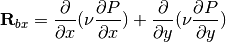
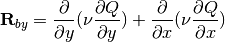
Note that the form is slightly different from that in Kennedy et al. (2000). The present form was found to give a more stable numerical solution as the cross–derivatives removed. In the present form, 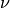 is the artificial eddy viscosity defined by
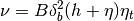
where 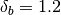. In Kennedy et al. (2000),  varies smoothly from 0 to 1 so as to avoid an impulsive start of breaking and the resulting instability. In the present TVD model, because there is no instability problem found, we adopt a constant value 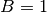 as breaking is initiated
varies smoothly from 0 to 1 so as to avoid an impulsive start of breaking and the resulting instability. In the present TVD model, because there is no instability problem found, we adopt a constant value 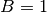 as breaking is initiated
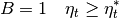
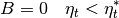
The parameter 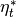 determines the onset and cessation of breaking. Following Kennedy et al., a breaking event begins when 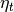 exceeds some initial threshold value 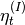, as breaking develops, the wave will continue to break until drops below 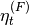. However, we do not use the smooth transition as in Kennedy et al. because the present TVD scheme did not encounter any instability problem. The default values of and are 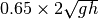 and 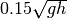 as in the previous FUNWAVE version (i.e., Cbrk1 = 0.65 and Cbrk2=0.15 in the present version, see the example in the next section). However, the recent tests showed should be slightly larger to match the laboratory data.